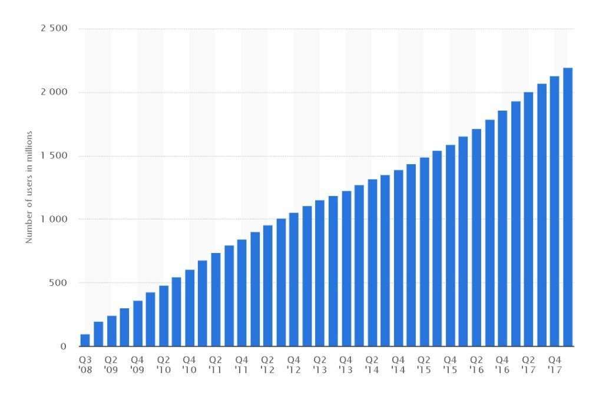
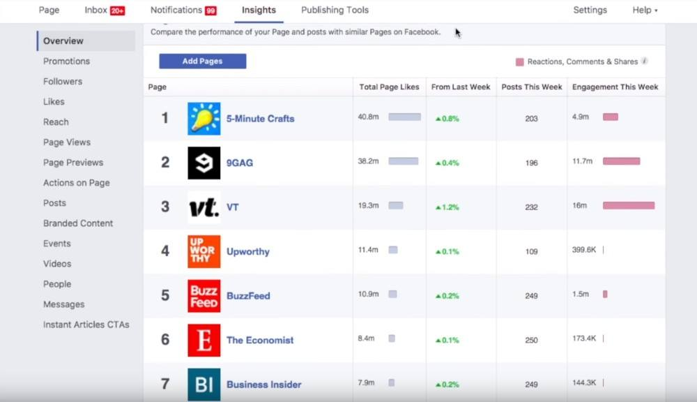
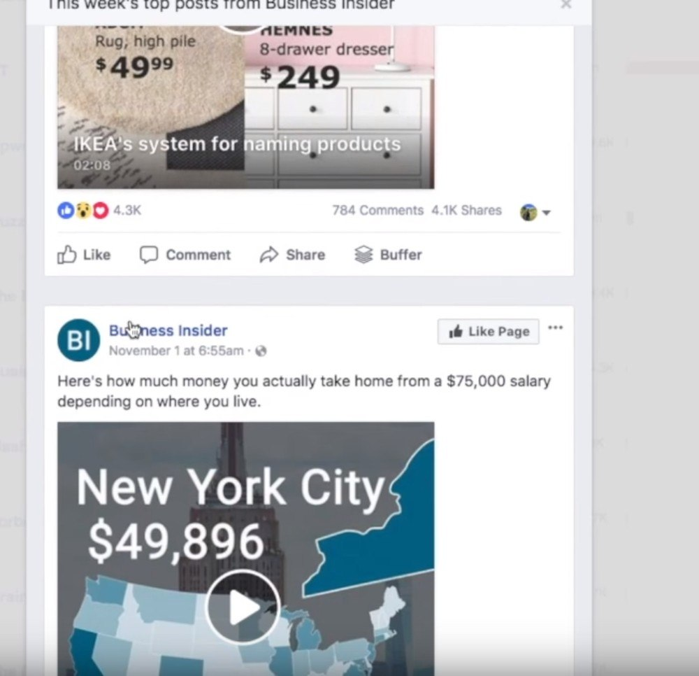
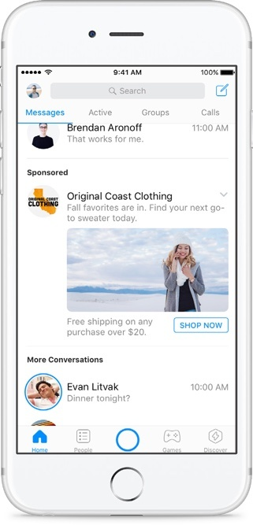

With over 2.19 BILLION monthly active users, Facebook is one of the most active social media platforms.

It doesn’t matter if you’re just starting out on Facebook or you’re a seasoned expert. It’s always better to have a little refreshment on marketing tactics that can benefit your brand.
With that said, let’s start with our Facebook marketing tip #1:
1. Repurpose And Re-share Your Top Performing Content.
It can be challenging to stay consistent at putting forth brand new content every other day. Thus, the point of re-sharing content on Facebook is to save time and resources.
You’ll probably have a lot of doubts about this. However, there is no harm in re-sharing your content across Facebook. Take a look at the top brands and publishers on Facebook and observe their Facebook strategy. One thing that’s very apparent is that they’re sharing top posts that have performed well on their Facebook page in the past.
To help put this in perspective a little bit, if you take a look at the actual data, only about 2-5% of your audience is actually going to see any given piece of content that you post. Meaning 95-98% of your audience isn’t seeing your content at all, so this proves that there isn’t any harm in re-sharing content to Facebook.
A good rule of thumb for re-sharing content to Facebook is to wait 3-4 weeks before you publish a certain piece of content.
Ideally, you’ll have a never-ending supply of great content that you can post on your page. Especially when done in tandem with curated content.
2. Facebook Pages To Watch
You’ve probably heard some of the top marketers talk about this specific tool. It’s one of the most powerful tools for creating quality social media content. In addition to that, you have a more flexible ability to set goals and benchmarks.
However, there is a catch. In order to use it, you have to fulfill 2 conditions.
1. You need to be a Facebook page manager having access to your insights
2. You need 75 or more likes to your Facebook page.
Once you have access to Facebook Pages to Watch, you’re granted the ability to watch up to 100 pages. This could be your competitors. Your peers. Inspirational pages that you view and love. Basically, any sort of page you want as long as it’s a registered Facebook page into Facebook Pages to Watch.
After you’ve formed a list of about 25 to 50 pages that you can find inspiration from every day, It’s time to figure out the best ways to use this tool. We recommend using Facebook Pages to Watch in 3 unique ways:
1. Set Goals And Benchmarks
As you can see here within the tool, Facebook Pages to Watch provides a host of amazing analytics about your peers and competitors that you can use to set your own goals and benchmarks.

You can use this data to set audience engagement goals and audience growth goals.
2. Use Facebook Pages to Watch to curate content.
There are several ways of curating content on Facebook. Facebook Pages to Watch, tops as one of the best content curation tools for finding amazing content.
Now, as you can see below when you click on a hyperlink to a specific page that you’re watching, Facebook sorts the content by the most engaging over the previous seven days.

This a very useful feature. Facebook is essentially giving you a playbook for what’s successful for other brands in your industry on Facebook. The cool part is that Facebook actually ranks the posts by the most engaging over the previous week.
3. Use Facebook Pages to Watch for developing your own content.
You can use Facebook Pages to Watch to find and get inspired for your own content on Facebook. Finding original ideas on a consistent basis can become a tedious task. Sometimes, you require inspiration from others.
“I take inspiration from everyone and everything. I’m inspired by current champions, former champions, true competitors, people dedicated to their dream, hard workers, dreamers, believers, achievers. ” – Connor McGregor
Facebook Pages to Watch is the perfect tool to follow inspirational brand accounts that you can derive amazing ideas from. You can later turn them into your own and then post them to your Facebook page. Don’t copy their ideas, simply find inspiration for things that you might be able to relate to your own brand.
When you discover the power of Facebook Pages to Watch, you’ll find it hard to not use this tool.
Heres a short video that summaries this awesome tool:
3. Facebook Messenger
Speaking of exciting and emerging platform tools for Facebook, Messenger is a popular topic of social media nowadays. Lots of brands and publishers use it to connect with their audience in new ways. There are tons of ways one can use Messenger to help amplify one’s social media marketing efforts.
The first thing we suggest is getting familiar with chatbots. A few we recommend are Manychat, Chatfuel, Botsify.
These 3, among many, are some of the highest rated on the market and we highly recommend that you check them out. So how does one implement Facebook Messenger in their marketing strategy? The first thing that comes to mind is using Facebook Messenger to deliver content in new ways to your audience.
With the power of Facebook Messenger there exist tons of ways that you can achieve that.
Here are a few strategies you can test.
1. You can have people opt-in on your blog to receive the content via Facebook Messenger. Many brands and businesses create ebooks, studies, reports etc. and deliver those in bite-sized chunks through messenger.
2. You can create a super simple chatbot menu that allows people to pick and choose the type of content they want to see
3. You can ask them a series of questions once they opt into your Facebook Messenger bot. Based on their answers, they’ll be able to choose the content they might like.
But, are you one of the unlucky few who lacks a huge Facebook audience? Are you unsure about different ways to get people to opt into your messenger bots?
Don’t worry, there exists another feasible option for you.
Messenger Ads

Messenger ads offer a perfect opportunity for brands and marketers with either small Facebook pages or an unclear strategy. It is great because of several reasons:
1. It’s very inexpensive to advertise on Messenger.
2. Click-through rates are extremely high. Why? Because people are still shocked and awed by the fact that they’re interacting with brands through Facebook Messenger.
Now that’s on the content side of things, but the power of Facebook Messenger also lies in customer service. You might have seen all the features that Facebook has released. People now have the ability to direct message your brand through messenger.
People are also able to see your business store hours. They can know how fast your company is likely to respond to someone and even see the percentage at which they respond to customers.
Hence, we can conclude that Facebook is creating this new ecosystem of customer service and people are starting to expect it. In fact, if you have a question for Facebook, you’ll notice their own support team will respond to you through Messenger.
It’s a really exciting time if you’re a marketer and you’re experimenting with Facebook Messenger. It is novel, new and people are really engaging with it.
4. Facebook Groups
Facebook Groups are still a huge opportunity for brands and businesses to build a massive community around a vertical. However, a lot of times Facebook Groups tend to be ignored by people. Either because they don’t know how powerful Facebook Groups are, or they just don’t have the time or resources dedicated to building a thriving community.
If you’re interested in marketing to Facebook Groups, here are a few tips you can follow.
1. Start with a niche and build a small, highly dedicated, highly active community around that specific topic. In other words, don’t try to be everything for everyone. Build your group around a topic that is very specific to serving customers needs.
2. Ask yourself, what are your audiences pain points? What if people asked you about your business on a regular basis? What are the top questions on Quora in your industry?
Those all make for great topic ideas to use in your Facebook group.
Your Facebook group will start out small but the key is to avoid using it to sell your products from the very beginning. Your group should be centered around value, education, and usefulness. Believe it or not, the less you sell your product to your group’s members, the more attractive your products will be.
If you provide people useful, relevant content that helps solve their challenges, you’re going to get more customers. Not through talking about yourself all the time. When it comes to building a successful Facebook group, you have to remember that it will take a lot of time and dedication to making sure that it is successful.
This article shows you how you can use Jarvee to find niche-relevant Facebook groups to get inspiration from or to share your content with. Be sure to check that out as well.
That will be it for today’s tips on effective Facebook marketing. We hope you learned a thing or two from the article.
Talha says
I myself reshare old top performing content several times. However, I’d really advise to only re-share 3-5 times max. That too with 3-5 weeks intervals in between.
Aside from saving time on writing good content, you also increase the probability of sharing your content to the people who didn’t get the chance to see it!
Logan says
Thanks for the tip Talha!
Aretha says
Facebook has made a very clever move with Facebook pages to watch. It increases the percentage of quality content produced since competitors will have more quality material to curate content with.
The result? Both Facebook and the brand benefit. it’s a win-win situation for everyone!
Logan says
Nicely pointed out!
Sophie says
I’m both happy and sad that you guys mentioned facebook pages to watch since not many people are currently utilizing its full power!
Happy because people will benefit from it. Sad because of the same reason lol, I’ll have more competition.
I have been spying and curating content from Facebook pages to watch for a while and it always drives great engagement. every single time literally!
Logan says
We’re glad to hear that 🙂
Adela says
I’ve seen a lot of the clever and big marketing agencies now properly utilize the power of chatbots!
It’s such a nice way of marketing and as soon as I started to use them, I saw a very high increase in the % of opt-ins for my lead magnet. People should really jump on this train before it gets saturated and expensive.
Logan says
I saw an article about this too! the conversion rate definitely increases with chatbots
Tina says
Facebook groups used in conjunction with jarvee is the best combination, not only for affiliate products or CPA offers but also for one’s own brand. I personally farm a lot of Facebook accounts with jarvee and either sell them or promote CPA offers in FB groups.
Anthony says
Facebook groups are in my opinion, better than Facebook ads. However, to utilize Facebook groups to the fullest, I’d recommend making mass accounts and share quality content in groups, not spam.
Logan says
Spamming should be done at no costs. It reduces brand value a lot
Maurice says
Messenger ads work very well with products for the millennial audience. The conversion rate is on an average 10% more higher than the CR on other platforms.
Logan says
Thanks for the insight Maurice!
Scarlet says
Thank you guys for sharing this! I wasn’t aware of the Facebook Pages to Watch feature. Was doing this manually on my way but I didn’t know we have it as feature within Facebook! I’m on it now, thanks!
Mery G says
Facebook is mother,father,grandmother and grandfather of all social media platforms. Facebook is, like Google, just to big and powerful to ignore it. We don’t need any type of media beside Facebook. All we need is goodwill and Jarvee 🙂
Susanna says
I use this when I’m out of ideas for what to post in some future period, when I create content in advance. It happens often that I post something that was interesting on the current day, but usually I have my plan prepared in advance and then just adjust it when needed.
Larissa says
We are a bit late with the chatbox, but so far we didn’t need it. Now we are looking for the right one to fit our needs. Will check out these recommendations, thank you!
Baquier says
There are zillion reasons why to use Facebook in our marketing strategy. No media on earth doesn’t have that big audience. Facebook doesn’t recognize borders and nationalities, races or anything similar. It’s “our”media.
Anamary says
So simple thing and so powerful thing. Facebook designers and creators are the smartest minds on planet earth. I admire and I’m scared at the same time. Huge thing!